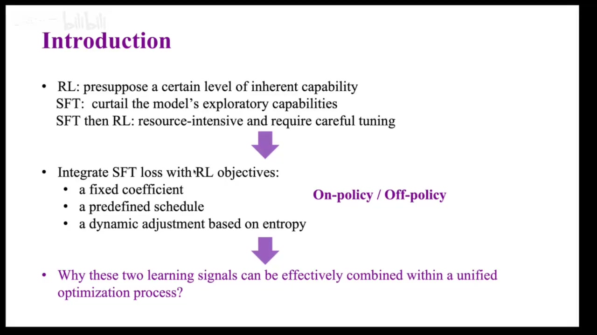
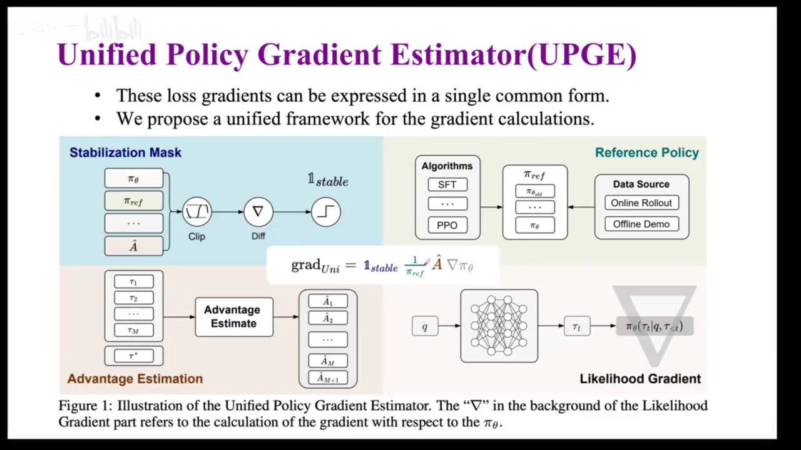
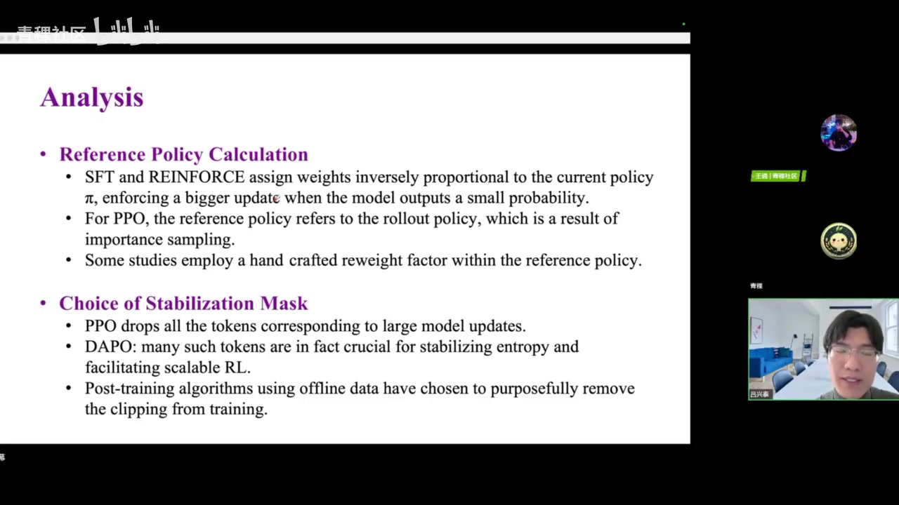
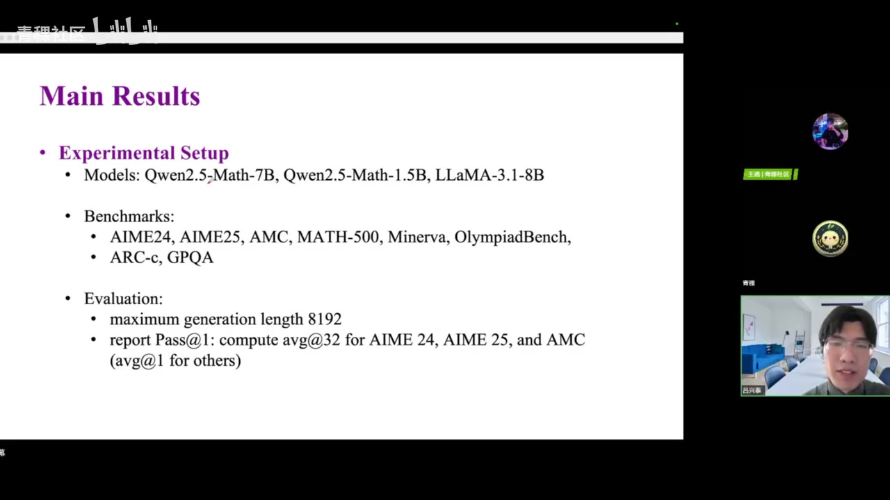
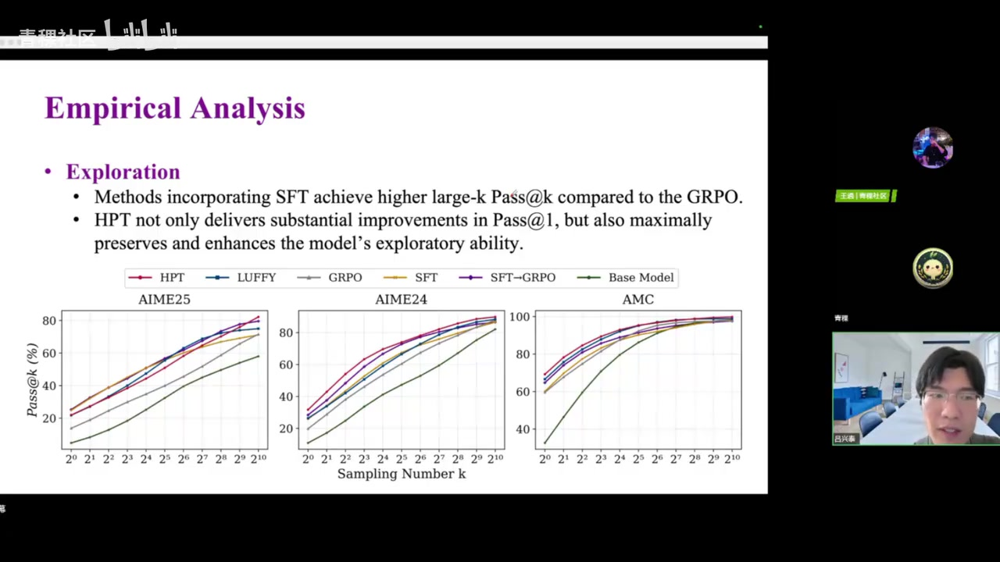
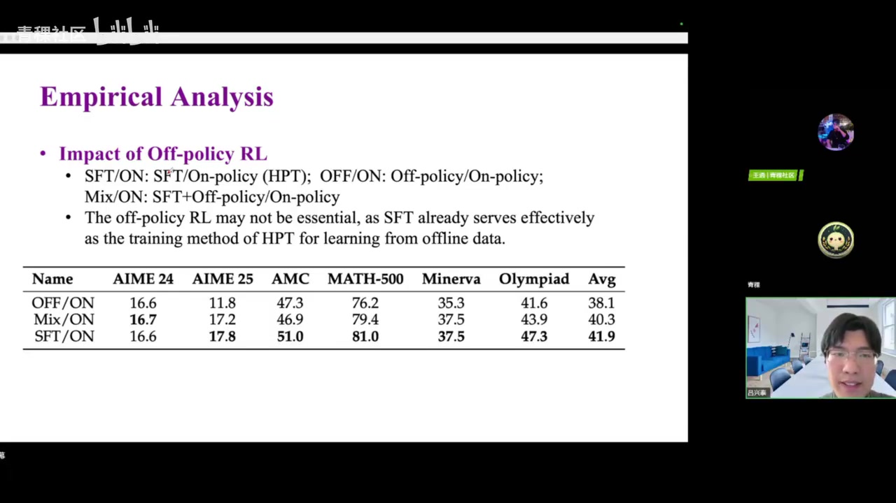

01｜SFT与RL统一框架引言
00:00:01主持人／主讲人大家好，欢迎参加青稞社区组织的第83期青稞 Talk，我是青稞社区助理王过。今天我们很荣幸邀请到清华大学博士生吕新泰博士，为大家分享《如何统一 SFT 与 RL：迈向大型语言模型后训练的统一视角》。时间已到，接下来把直播间交给吕新泰博士，请您共享屏幕。可以了，能看到。好，那我开始本次分享。
00:00:47主持人／主讲人本次分享基于我们近期发表的一篇论文，题为《Towards a Unified View of Large Language Model Post-Training》。屏幕上两个二维码分别对应该论文及其 Hugging Face Hub 页面。分享内容共分为四部分：大语言模型后训练算法概览；我们提出的统一大语言模型后训练理论框架；基于实时采样表现的后训练算法 HT；以及对未来研究方向的讨论与思考。
00:01:36吕新泰 · 主讲人首先做简要引入。大语言模型后训练主要有三类范式：强化学习（RL）、有监督微调（SFT）和监督微调+强化学习的混合范式（SFT+RL）。其中，强化学习是近期效果显著且广泛应用的范式，无论开源还是闭源模型，均不同程度采用 PPO、GRPO 等各类强化学习算法。这些方法能显著提升模型性能与泛化能力，并赋予模型在人类视角下具备‘思考’能力的表征。
00:02:18吕新泰 · 主讲人但强化学习虽具诸多优势，也存在一个不可忽视的局限：高度依赖预训练或初始模型的质量。例如，若初始模型能力较弱，直接应用强化学习训练，不仅难以提升性能，甚至可能导致整体效果下降。这是强化学习的关键优劣势之一。另一类广泛应用的范式是有监督微调（SFT），它能使模型快速收敛至目标分布，高效习得特定领域知识，这是其核心优势。
00:03:04吕新泰 · 主讲人相较强化学习，SFT 也逐渐暴露出不容忽视的劣势：限制模型的探索能力，进而削弱泛化性。例如，在数学任务上进行 SFT 训练，模型仅提升数学任务指标，却可能在代码等其他任务上指标下降；而若采用强化学习，模型更可能习得通用逻辑推理能力——这种能力可跨任务迁移，对解决代码等非数学任务亦有正向帮助。
00:03:52吕新泰 · 主讲人此外还有一类主流范式是 SFT+RL 混合训练，即先用高质量数据做 SFT，再在其基础上开展强化学习。当前几乎所有知名大模型（如 Qwen、DeepSeek）均采用该流程。该范式效果优异，但资源消耗大：既需 SFT 又需 RL，还需精细设计 SFT 与 RL 的对齐策略。

00:04:35吕新泰 · 主讲人以上即三种常见大语言模型后训练范式。自然引出一个问题：既然 SFT 与 RL 各有优势与局限，能否将二者有机融合，探索新型算法？事实上，自今年上半年起，已陆续出现若干相关工作，其典型做法是将 SFT 的 loss 与 RL 的 objective 进行联合优化——即在一个统一训练目标中，同时包含 SFT 的监督损失项与 RL 的策略梯度项。
00:05:19吕新泰 · 主讲人那么将这两个 loss 进行加合时，会涉及一个系数分配问题：这两个 loss 的系数如何确定？哪个 loss 分配的权重更大，哪个更小？实际上有三种比较常见的系数分配方案。第一种是固定系数，即在整个训练过程中，SFT 的 loss 系数和 RL 的 loss 系数均保持恒定；该方案的代表方法是 LU。第二种是采用预设的 schedule，在训练过程中按计划动态调整系数。阿里提出的 CHI-RL 应该采用的是这种方案。第三种是根据某个指标（例如 KL 散度或 reward margin 等）在训练过程中动态调整系数；S²F 工作采用了这种方法。
00:05:56吕新泰 · 主讲人然后阿里的 child 应该是用的是这种方案。然后同时的话还有一种方法的话是我根据某一个指标，比如说 tro 的指标，然后在这个训练的过程中去动态的调整这个系数。然后是 S 2F 这个工作的话是用了这种方法。那么在此之外说一个小的岔开岔开这个话题，说一个小的补充知识，这些对后面我们的分享有一定的帮助。就是说这个 on policy 和 of policy 的概念，就是 on policy 和 all policy 的话，其实是划分嗯这些大圆模型后训练算法的一种维度。
00:06:30吕新泰 · 主讲人二者的核心区别在于：待训练的 policy（即目标模型）与 behavior policy（即用于与环境交互、生成数据的采样模型）是否为同一模型。在 on-policy 算法中，二者是同一个模型——待训练模型既参与采样，也接受更新；而在 off-policy 算法中，二者不是同一个模型——通常使用一个固定的或旧版本的模型进行采样，再用采样得到的数据更新另一个目标模型。例如，SFT 就是一个典型的 off-policy 算法。
00:07:05吕新泰 · 主讲人回到前述结合 SFT 与 RL 的算法，我们会自然产生一个问题：为什么这两种 loss 能较好地结合，并取得良好效果？因为 SFT 的 loss 形式与 RL 的 loss 形式本质上优化目标差异很大，那么它们为何能协同生效？这也是本工作、即我今天分享希望解答的核心问题。
00:07:41吕新泰 · 主讲人为了更好地回答这个问题，我们可以换一个视角来审视大语言模型的后训练算法。传统上，人们通常从 loss 函数的角度理解一种后训练算法；而本工作提供了一个新视角：从梯度视角出发，分析各类后训练算法的 loss 梯度（或 policy 梯度）结构，观察是否存在共性或可统一的规律。本小节将从大家最熟悉的几个经典大语言模型后训练算法出发，逐一推导其 loss 关于模型参数的梯度形式。
00:08:25吕新泰 · 主讲人先从 SFT 说起。它让预训练模型拟合给定的数据分布，使输出分布接近示范数据。这里使用交叉熵损失：q 表示给定的问题，a 表示相应的回答。
00:09:12吕新泰 · 主讲人式中的 π 是待训练的策略模型；t 表示回答中 token 的位置，例如 t=1 是第一个 token；N 表示数据中共有多少条回答。对 SFT 损失关于模型参数求导，就是对相应回答的对数概率求导。
00:09:51吕新泰 · 主讲人我们就用这个求导公式：先对 log π 求导，得到 1/π；再对 π_θ 求导；前面保持不变。这样就得到了 policy gradient。这个 loss gradient 和 policy gradient 呈现一个负数关系——即 loss gradient = -policy gradient。这是 SFT 的一种情况。
00:10:24吕新泰 · 主讲人PPO 是 OpenAI 提出的一个经典算法，被广泛应用于 RL 或者 VR 各类算法中，也是大模型强化学习的一个基本范式。PPO 的 loss 包含多项，为简化起见，我们先忽略一些正则化项，例如 KL 约束项和 entropy 损失项。去除这些项后，loss 呈现如下形式。后续我们会说明：这些被忽略的项，最终其实都可以被吸收进 advantage 项中。
00:11:05吕新泰 · 主讲人我们来看这个简化后的 PPO loss 形式——大家应该比较熟悉：其中 A 是 advantage，也是我们最终要最大化的目标。R 是一个修正项，称为重要性采样（importance sampling），用于修正被更新模型与实际采样模型不一致所引入的偏差。其具体形式是：当前待更新模型 π_θ 除以采样模型 π_ref；在 PPO 中，π_ref 就是 step 开始前的模型，通常称为 π_old。
00:11:45吕新泰 · 主讲人clip 是一个截断操作，其函数图像大致如下：对 R 过大或过小的部分截断为固定值；在中间一个安全范围内，令其保持 y = x 的线性关系。过大和过小的边界由超参数 ε 决定，即限制在 [1−ε, 1+ε] 区间内。最后对所有样本取平均并求和，得到 PPO loss 的形式。对该 loss 求导非常简单。
00:12:25吕新泰 · 主讲人因为 loss 中唯一显式依赖参数 θ 的项，就是重要性采样中的分子项 π_θ，所以求导只需对分子求导，最终得到的 policy gradient 形式如下。除了 SFT 和 PPO 之外，还有一类虽是近期提出但具代表性的算法，即 mix-policy 算法中的 policy part。这种 mix-policy 算法，就是我最开始在引言中提到的、同时包含 SFT 和 RL 部分的算法。
00:12:58吕新泰 · 主讲人其中两种代表性算法是 SPPO 和 SOFT。它们的共同特点是将 on-policy 和 off-policy 进行结合：因此其 loss 中既有 on-policy 部分，也有 off-policy 部分。on-policy 部分基本采用前述 PPO loss 形式，或其变体；而 off-policy 部分与 on-policy 部分结构高度相似，主要区别在于：off-policy 部分所使用的采样数据，并非来自当前模型自身，也非来自前一 step 的模型，而是通常来自一个外部模型。
00:13:37吕新泰 · 主讲人例如训练千问模型时，采样模型可能是 DeepSeek-V2。这里给出了 SOFT 的 loss 形式：它与 PPO loss 相似，但稍复杂，引入了一个称为 ρ 的修正项。为更直观体现各类 loss 的本质，我们以 SPPO 的 loss 为例。SPPO loss 形式如下，可见其与上页 PPO loss 非常接近；主要区别在于重要性采样的修正：其分子是 π_θ，分母是 π_β。
00:14:15吕新泰 · 主讲人然后这里的 π_β 是一个更强的外来模型，基本上就是 DeepSeek-V2。但在实际使用过程中，一般不会真正计算这个 π_β，而是将其置为 1。这主要有两点考虑：一方面，计算 π_β 非常困难，几乎不可能；另一方面，我们在使用 RLHF 或 DPO 类数据时，通常采用开源社区已有的大量高质量中游数据，而不会亲自调用模型进行数据采集。
00:14:54吕新泰 · 主讲人既然没有数据采集过程，开源社区提供的数据通常只有文本本身，而不会包含模型在生成该数据时对应每个 token 的输出概率。这是第一个原因。第二个原因是：π_θ 模型和 π_β 模型通常不属于同一系列——例如 π_θ 是 Qwen 模型，π_β 是另一个模型。此时它们的分词器不同，对同一段人类可读文本，分词后得到的 token 序列无法一一对应。
00:15:28吕新泰 · 主讲人因此我们无法准确计算重要性采样项。这是将 π_β 置为 1 的主要原因之一。另一原因在于：我们所采用的模型本身已经训练得较好，其输出的 token 概率普遍较高，通常接近 1。为简化实现并突出核心机制，实践中统一将该项置为 1。置为 1 后，上面的式子就简化为下面这个公式——这就是 SFT 实际使用的 policy loss。
00:16:08吕新泰 · 主讲人对该 loss 关于 π_θ 求导，即对分母项 π_θ 进行求导，得到的就是下面这个形式。至此，我们已对三种算法分别求导，得到了各自的 policy gradient（或 loss gradient）。除此之外，还有其他算法；我们不再关注其 loss 形式，而是统一聚焦于 policy gradient。对这些算法逐一求导后，可整理出一张汇总表格。我们先看最后一列。
00:16:43吕新泰 · 主讲人最后一列即为前述各算法最终求导所得的 policy gradient 项：S 表示 Supervised Fine-tuning，DPO 表示 Direct Preference Optimization，SFT 表示 Supervised Fine-tuning，均与前述推导一致。从上到下观察这些算法的 policy gradient，可发现若干共性规律：第一项均为对 π_θ 的梯度；第二项均涉及一个类似 advantage 的项；此外，所有算法的表达式中均出现一个分母项。
00:17:21吕新泰 · 主讲人例如，SFT 的分母项是 π_θ，PPO 的分母项是 π_θ/π_ref，而 SFT（此处应指某特定变体，原文未明确）的分母项是 1。由此可总结出统一规律——这也引出了我们的第二部分：所提出的统一框架。从形式上看，我们已获得一种将大语言模型后续训练算法统一起来的方式。我们将前述表格进行结构化整理，并做严谨化处理，最终发现：所有主流大语言模型后训练算法的 policy gradient 均可写成一种高度一致的形式。
00:18:00吕新泰 · 主讲人该形式分为四个部分，从前到后依次对应四个公式所展示的组件。我们依次称其为：蓝色部分叫 stabilization mask，绿色部分叫 reference policy，A 是 advantage estimation，最后一项是梯度方向项（like hold grad）。接下来将对这四项逐一详细解释。本节还将展示该统一形式的严格推导过程，并在此基础上对现有各类算法进行系统性分析。

00:18:32吕新泰 · 主讲人那么首先我们还是先来看一下这个 UPG 梯度它具体包含了哪些部分，以及都是什么样子。首先我们来一个一个来看：首先是这个 stabilization mask，这项是由 clipping 操作得到的。clipping 操作的形式我们之前已经介绍过，其目的就是选取中间这部分区域，而尽可能忽略两边这些 unsafe 的部分，从而使模型的训练过程更加稳定。
00:19:16吕新泰 · 主讲人然后对 clipping 这一项求导会发现：由于两边是给定的常数值，求导后为零；中间部分函数是 y = x，求导后为一。因此对 clipping 求导后就得到一个类似 mask 的项，我们称之为 stabilization mask——它是一个取值仅为 0 或 1 的项。第二项叫做 reference policy denominator，即之前介绍过的、广泛出现在分母中的这些项，因为它们在所有 policy gradient 方法中都位于分母位置，所以我们将其命名为 reference policy denominator。
02｜UPGE 统一梯度的四个部件
00:19:58吕新泰 · 主讲人需要说明的一点是，它和我们传统所认为的 reference policy 有所不同。传统意义上的 reference policy 一般指 RO 的 policy，例如在 PPO 中是 π_old，或者指为避免模型在训练过程中偏离初始模型过多，而将起始模型设为 reference policy，并施加 KL 正则化。而在这里，我们对 reference policy 进行了泛化。
00:20:29吕新泰 · 主讲人我们认为：只要是在分母项中出现、并对整个策略更新起到修正（rate）作用的项，我们都统称为 reference policy。例如对 SPPO 来说，就是我们在求导计算中得到的 π；对 GRPO 来说，则是 π；除此之外，剩下两项是比较常见的：第一项是 advantage estimate，即我们在 RL 训练中常提到的优势函数 advantage，在 PPO 中一般用 GAE 计算，在 GRPO 中则有一项是减去均值、再除以标准差。
00:21:11吕新泰 · 主讲人最后一项是对模型参数本身求导，我们称之为 likelihood term。它所做的事情可以简单理解为：将模型当前输出的动作与参数更新过程关联起来。以上就是 UPG 框架所组成的四个部分，即这个统一梯度所具体包含的四个主要组成部分。我们刚才的分析脉络，是从现有大语言模型后训练算法出发，通过归纳整理，得到了这样一个统一形式。
00:21:51吕新泰 · 主讲人但我们提出的 UPG，不仅仅是一个形式上的统一，它还有理论基础。接下来我会分享：如何从各类后训练算法的 common objective 出发，推导出我们的 UPG。首先，现有大语言模型后训练算法其实存在一个最大公约数——用学术语言来说，就是 common objective。也就是说，这些后训练算法本质上追求的目标是一致的。那么这个目标是什么呢？
00:22:29吕新泰 · 主讲人我们想让模型以尽可能高的概率输出我们想要的回复，以尽可能低的概率输出不想要的回复。也就是说，我们希望增大模型的 success set rate，同时让模型的输出分布尽可能接近我们给出的 demo 分布，该分布通常被称为 behavior policy。将上述目标公式化，得到的目标函数包含两项：一项是奖励 R，另一项是用 KL 散度衡量的当前模型策略与 behavior policy 之间的差异。
00:23:13吕新泰 · 主讲人我们希望该目标函数尽可能大。为此，首先对它进行求导和整理。具体求导结果如下面公式所示：第一项对应原目标函数中的 R 项，第二项对应 KL 散度项。具体求导过程此处不展开，仅依赖数学上的基本定理，即文中列出的 Lemma A1 和 Lemma A2。
00:23:59吕新泰 · 主讲人在应用 Lemma A1 和 Lemma A2 后，可得该目标函数关于参数的导数表达式。随后我们对该导数表达式执行一个称为 ‘measure change’ 的操作：将采样分布由 π_θ（当前策略）改为 π_ref（reference policy），从而得到新的表达式。为此引入了一个重要性采样权重项。最终得到的公式中，Q 是原始问题定义中的 Q 函数，τ 是采样轨迹，π_θ 是待优化的模型策略。
00:24:43吕新泰 · 主讲人其中 π_ref 即为框架中所定义的 reference policy。最终整理所得的 advantage 形式如右侧所示。该形式由前述导数表达式整理而来，包含两个子项：第一项即原始目标函数中的奖励 R；第二项由 KL 散度项经推导简化得到，其结构包含重要性采样比（分子/分母），以及一个指示函数 I[π_ref ≠ π_beta]。
00:25:24吕新泰 · 主讲人需额外说明的是：前一项与强化学习算法（如 PPO）相关联，后一项与监督微调（SFT）算法相关联。在常规强化学习训练中，前一项常被改写为 advantage 形式，目的是修正过大的方差，并对整个 trajectory 进行归一化修正——否则采样仅针对单个 sequence。不同算法对 advantage 的计算方式不同：例如 PPO 使用 GAE（Generalized Advantage Estimation），而 GRPO 使用 (r − r̄)/σ_r（即奖励减去均值后除以标准差）。
00:26:02吕新泰 · 主讲人进一步，我们在该公式中引入前述 clip 操作所对应的 stabilization mask。加入该项后，得到最终的统一梯度 U。该统一梯度共包含四项：第一项是 stabilization mask；第二项是 reference policy indicator；第三项是 advantage；第四项是 likelihood gradient。由此，我们完成了从初始 common objective 到最终统一梯度的完整推导。
00:26:53吕新泰 · 主讲人然后得到的这个推导之后，其实可以额外展开一下：不管对于 SFT 还是对于 RL（如 PPO），它们所要优化的目标都是同一个 common objective；它们的 loss 形式也只是这个 common objective 的一个项。
00:27:37吕新泰 · 主讲人也就是说，最终它们的 loss 形式都可以囊括到我们推导出的这个公式里面。因此，无论是 SFT 还是 RL，彼此的优化目标是一致的，在优化时并不冲突。这也从一个角度解释了为什么之前的 LU、ST 等 mix-policy 算法中，SFT 和 RL 可以被同时使用。但需要说明的是：这些算法拥有共同的 common objective，并不意味着它们是相同的算法；相反，从我们的 UT 框架出发，能更清晰地展示出这些算法之间的差异及其各自特征。
00:28:23吕新泰 · 主讲人接下来，我们从两个方面——reference policy 和 stabilization——来展示这些差异。从我们的框架来看，不同算法在 reference policy 的选择上存在明显区别，其作用也各不相同。例如，对于 ST 和 Reinforce 这类算法，其 reference policy 就是当前策略 π。
00:28:57吕新泰 · 主讲人这样做的好处是，可以让模型对当前输出概率较低的 token 进行较大幅度的更新。具体来说，如果当前模型输出某个 demo token 的概率较低，即它对该 token 的掌握能力较差、不倾向于生成该 token，那么将 reference policy 设为 π，恰好对应原始 SFT loss 的形式。
00:29:32吕新泰 · 主讲人此时 reference policy 是 π，出现在分母项（即 1/π）。若该 token 的概率 π 较小，则 1/π 较大，从而导致更新幅度更大，使模型更快学会那些它原本不熟悉 token 的分布。而对于 PPO 来说，其 π_ref 是 rollout policy，即 π_old，起到的作用是作为重要性采样的修正项，使最终 loss 更加准确。
00:30:11吕新泰 · 主讲人此外，一些工作还会人工修正 reference policy，以提升其准确性，从而获得更好的训练效果。关于 stabilization mask，PPO 的方式与其 clip 方式完全一致：上下界分别为 1−ε 和 1+ε，两个边界关于 1 对称。这样做的目的是避免过大的参数更新，提升训练稳定性。

00:30:51吕新泰 · 主讲人但有研究发现，被 clip 掉的、落在两个边界之外的 token，其实对提升模型正确率以及改善 entropy 具有重要作用。例如，某些工作（如 DPO）会对上界做细微增大。还有一些工作，比如基于 offline data 的 SFT 方法，则干脆不引入 stabilization mask。由此可作一个简单总结：这些大语言模型的后训练算法，其实共享同一个优化目标。
00:31:30吕新泰 · 主讲人但是同时，它们也有一些内在特质和差异，即我们所说的 betriof。这启发我们：在设计算法时，不应在整个训练过程中单一使用 SFT 或 RL（如 PPO）算法，而应依据当前训练情况，结合各算法的内在特质，动态选择最适合当前阶段的算法。受此启发，我们进入今天分享的第三部分：提出了一个新算法，称为 Hybrid Post-training（HPT）。
00:32:14吕新泰 · 主讲人该算法依据模型当前的表现，动态调整训练策略。其整体框架如下图所示。简言之，我们对 RL 算法（PPO）和 SFT 算法的损失函数按一定系数进行融合。该系数由模型在当前 batch 的 rollout performance（即采样表现）决定：先评估模型表现，再代入具体函数计算系数 α 和 β；随后用 α 和 β 对 RL loss 和 SFT loss 进行加权平均，得到最终的 HPT loss。在实际使用中，α 和 β 被设为二值化——非 0 即 1，从而引入明确的选择机制。
00:33:02吕新泰 · 主讲人接下来，我将详细介绍该算法本身，以及我们对其有效性开展的实验验证；最后还将对算法本身，以及前文所述的 U-Memory 框架进行较深入的分析。首先，上图已较清晰地展示了该算法的整体结构。关于细节：首先是 performance 如何计算。对于一个问题 q，模型进行 N 次独立采样，每次得到一个回复 π_i；再将每个 π_i 输入一个 verifier（通常采用 binary classifier 形式）进行判断：若该回复包含正确答案，则得分为 0；否则（即回复错误）得分为 1；最终对 N 个得分取平均，得到模型在该问题上的 performance p。
00:33:48吕新泰 · 主讲人我们就把它这个得分为零。如果没有的话，就是说这个采样是回复错误的，就得分质为一。然后最终把这些得分进行一个平均，就得到了模型在当前问题中的一个 performance p，那然后我们根据这个 P 的话可以去得到我们的返返回的系数 effici 阿尔法和贝塔。然后阿尔法贝塔的话是这样，就是我们会设置一个值伽马，在大于这个值伽马的时候会让阿尔法为一，贝塔为零。在小于这个阈值伽马的时候，会让阿尔法为零，贝塔为一。然后这样的话会起到一个什么的效果呢？就是我这个模型它的当在当前这个 question 中的采样的回复。
00:34:32吕新泰 · 主讲人这一设计的效果是：若模型在当前问题上的采样表现较差（即正确回复数未达 γ 所规定的比例），则触发 SFT 训练；若模型表现较强（即正确回复数超过 γ 阈值），则触发 RL 训练。α 和 β 的二值化设定，使整个训练过程呈现严格的‘非 SFT 即 RL’选择机制。最终，我们对 RL loss 和 SFT loss 进行加权平均，得到 HPT 的总 loss。
00:35:12吕新泰 · 主讲人额外说明：此处的 RL loss 参考了 Lu 等人的工作，采用加权 RPO（wRPO）形式——相较于 GRPO，它舍弃了对 sequence 内 token-level loss 的平均操作。以上即为 HPT 算法的整体概要。具体流程为：对一个输入 question，先进行 N 次采样，得到多个回复 π_i；再将这些 π_i 输入 verifier，计算模型在该 question 上的 performance。
00:35:51吕新泰 · 主讲人然后我们再根据 performance 4 计算得到系数 α 和 β。得到 α 和 β 后，再按常规流程分别计算 R 的 loss 和 S 的 loss，将这两个 loss 加权平均，得到最终用于模型更新的 loss L，最后进行模型参数更新。为验证该方法的有效性，我们开展了一系列实验，实验主要在三个模型上进行：Qwen2.5-Max-7B、Qwen2.5-Max-1.5B 以及 Llama3-8B。

00:36:24吕新泰 · 主讲人所选用的 benchmark 包含六个数学领域 benchmark：MATH-500、MMLU-Math、AMC-2023、AIME-2024、MATH-500（重复提及，保留原样）、MC（可能指 MiniCPM 或其他缩写，依原文保留）；同时包含两个 out-of-distribution benchmark：LC-Code 和 GPQA。evaluation 中，我们将最大回复长度设为 8192，并汇报 Pass@1 结果。对于 MATH-500、AMC-2023、AIME-2024 这三个规模较小的数据集，我们采用 I=32 进行计算；其余数据集则采用 I=1。
00:37:02吕新泰 · 主讲人该 evaluation 设置遵循 Lu 等人的工作。此外，若还有大家感兴趣但未提及的关键参数，分享结束后我将为大家详细说明。下图中蓝线代表我们的方法，在六个 in-distribution benchmark 和两个 out-of-distribution benchmark 上的结果均高于 baseline。一个值得注意的现象是：我们的方法显著优于先全量 SFT、再全量 PPO 的两阶段训练策略。
00:37:41吕新泰 · 主讲人这说明，将 SFT 与 RL 严格分阶段、顺序执行的训练 schedule 并非最优策略。上表展示的是 Qwen2.5-Max-7B 模型上的结果。此外，我们还在两个相对更弱的模型——Qwen2.5-Max-1.5B 和 Llama3-8B 上进行了实验。如后两张图所示，无论 benchmark 类型如何，也无论模型强弱，我们的方法均展现出稳定且较优的效果。
00:38:19吕新泰 · 主讲人以上是为验证方法有效性所开展的主实验。接下来介绍我们开展的若干分析性实验，这些实验也得出了一些有意义的结论。首先，我们从 P@k 视角出发，考察本方法是否能真正提升模型能力上限。为此，我们对比了本方法与其他 baseline 在不同 P@k 下的表现。P@k 的定义是：对同一问题采样 K 次，只要其中一次回答正确，即判定该问题回答正确；仅当 K 次全部错误时，才判定为错误。
03｜动态混合训练实验验证
00:39:09吕新泰 · 主讲人P@k 是衡量模型能力上限的广泛认可指标。例如，今年上半年黄士杰老师团队发表的《Limits of IRL》一文指出：强化学习（如 PPO）并不能提升模型的能力上限。其依据是，在较大 K 值（即大量采样）下，强化学习前后的模型在 P@k 上表现几乎一致。因此，作者认为：对强化学习前的模型增加采样次数，也能达到类似效果，故 PPO 并未真正提升模型的上界能力。

00:39:49吕新泰 · 主讲人我们旨在验证：在引入 SFT 与 RL 动态混合后，这一现象是否发生变化。具体而言，我们计算了 P@1 到 P@1024 的完整曲线，在三个数据集上实验，并与前述所有 baseline 进行对比。每条数据均基于 200,048 次采样统计得到 P@1 至 P@1024 的具体结果。
00:40:27吕新泰 · 主讲人然后这一实验结果展示在这里。首先可以从两个方面进行分析。一方面，我们对比这条紫线（即先进行 SFT 再进行 GRPO 的曲线）和灰线（单纯进行 GRPO 的曲线），可以发现：进行了 SFT 之后的紫线始终高于灰线。也就是说，经过 SFT 后，模型的 Pass@k 结果优于仅进行纯 GRPO 训练的结果。这说明：SFT 方法引入了外部数据，而这类外部数据有可能提升模型的能力上限。
00:41:12吕新泰 · 主讲人另一个方面的分析是观察我们的 APD 方法（图中红线）。它在这三张图中基本始终优于所有其他方法。对于 AM-125，虽然其初始 Pass@1 值较低，但在最终 Pass@1024 时取得了最大值。该方法不仅能提升 Pass@1，也能提升 Pass@k，例如与引入 SFT 类似，能够提升模型的能力上限。这是第一个分析。第二个分析则从 SFT 的视角出发。
00:41:46吕新泰 · 主讲人我们想考察：在引入 SFT 之后，它到底能起到什么作用？能否提升模型的 case 能力？以及能否让原本使用 GRPO 算法无法解决的问题变得可解？为此，我们进行了一个 case study，选取了 MATH-500 这一任务。MATH-500 数据集共包含 500 条数学问题，被划分为五个难度等级，LV5 最难，LV1 最简单；不同等级对应不同数量的问题。
00:42:21吕新泰 · 主讲人我们对 HT、GRPO 和 LLaMA-3 这三种方法均进行了测试，并得到如下结论：图中红色标记表示相比于 Baseline（即 GRPO）额外做对的题目数；绿色标记表示相比于 Baseline 额外做错的题目数。例如，‘+58’ 表示在 MATH-500 全部 500 条数据上，HT 相比 GRPO 多做对了 58 道题；同时，HT 相比 GRPO 多做错了 15 道题。从中可得出三条结论：第一，HT 方法在性能上确实优于 Baseline。
00:43:01吕新泰 · 主讲人第二，随着难度提升（从 LV1 到 LV5），红色数值持续增长，即做对的题目数越来越多。这说明 HT 方法确实能提升模型能力，尤其在较困难的任务上效果更显著。第三，相比红色数字，绿色数字相对较少，表明 HT 方法在后训练过程中并未引发严重的灾难性遗忘现象。接下来是我们进行的一个更细致的实验：我们想观察在 HT 训练过程中，单条数据上的正确率究竟如何变化。
00:43:47吕新泰 · 主讲人该实验设置如下：我们从 MATH 数据集中选取了 255 条样本，具体为 LV3、LV4、LV5 三个难度等级各取 85 条，并对其进行训练。为更清晰地展示难度分级，我们跳过 LV4，仅汇报 LV3 和 LV5 的结果。横轴表示训练 epoch 数；由于数据量较小，统一训练 50 轮。每个小方块的颜色代表当前 epoch 对该问题的一次采样表现：色块越深，回答质量越好（最深色块对应正确率为 1）；色块越浅，回答质量越差（白色表示 8 次采样中无一次正确）。纵轴每一行代表一个问题，不同行对应不同问题。
00:44:30吕新泰 · 主讲人四块叶深表示的回答越好，比如说最深的四色块属它的正确率是一，然后四块越浅的话是表示回答的越坏。比如说这个白色的色块就表示我采样了八次，他没有一次回答正确。然后这个纵轴的话，每一行都代表的是一个问题，就是这不同的行代表的是不同的问题。然后这里面这个图这个图所展示的是我们对于一个已经 s 过的前吻模型进行了21的训练所得到的一个结果。可以看到的话，其实在这张图中会存在着一些不可忽视的白色的块，有些甚至会出现一个整个回答都是白色的连线，或者是中间可能会出现一些颜色，就是说中间可能会做对，但后续就一直不能做对的这些现象。
00:45:19吕新泰 · 主讲人然后这其实说明了对于加P这种方法来说，它经常会在模型能力较弱或任务难度较高时失效。也就是说，如果一个问题在每次采样中都无法产生正确答案，那么该方法往往无法答对，也无法真正学会这个问题。接下来，在同样事实下，我们看一下算法的表现。这张图展示的是我们训练的算法HT的结果，减去先SFT后RPO方法的结果，所得到的差值图。
00:46:05吕新泰 · 主讲人图中红色代表我们的方法更好，红色越深表示我们的方法与先SFT后RPO方法之间的得分差异越大；蓝色则表示先SFT后RPO方法更好。从这两张图中可以得出一些清晰的结论：最开始时蓝色区域较多，这是因为加P训练前已进行了SFT，引入了额外计算和能力提升，使得模型在训练初期对大部分问题已有较不错的回答能力。
00:46:46吕新泰 · 主讲人但随着训练进行，红色区域占比逐渐增加，最终表明我们的HT算法会持续超越先SFT后RPO算法。这一现象在难度为5的数据上尤为明显，说明SP的引入能有效解决模型原本因始终无法答对而陷入RL训练僵局的问题，从而提升模型对高难度任务的适应性。此外，我们也对训练动态进行了分析，展示了若干指标随训练过程的变化。
00:47:30吕新泰 · 主讲人首先是validation performance，即统计训练过程中各checkpoint在三个benchmark上的具体结果。最上方的红色曲线是我们的算法，可见无论最终测试结果还是中间validation表现，我们的方法均更优。我们还分析了off-policy数据的占比：由于我们的算法及其他mix-policy算法同时包含on-policy和off-policy部分，因此可在每次训练更新中统计参与off-policy计算的数据占当次更新总数据的比例，并绘制成图。
00:48:05吕新泰 · 主讲人图中中心虚线对应理论值：对每个问题，有1条off-policy采样和7条on-policy采样，因此off-policy数据占比恒定为1/8。蓝线和红线分别表示我们的方法在Qwen2.5-Max-7B和1.5B上的实际表现，整体符合预期。
00:48:39吕新泰 · 主讲人例如，训练初期模型能力较弱，更倾向于执行SFT，此时off-policy数据占比相对较大；随着训练推进，模型能力增强，更多转向RL训练，off-policy数据占比随之降低。同时可观察到，能力更强的模型（如1.5B）拐点出现更早，且其off-policy数据占比更低。
00:49:19吕新泰 · 主讲人最后，我们还分析了整个训练过程中entropy和response length的变化：左边为entropy随训练的变化，右边为response length随训练的变化。可见，我们的方法在整个训练过程中entropy始终优于GRPO。这说明一旦引入SP数据，相当于在模型自身采样基础上引入外部采样结果，带来更多可能性，使输出更丰富，避免entropy过低。
00:49:59吕新泰 · 主讲人然后同时，一个比较有意思的现象是：在起始阶段，不同算法（比如我们的算法和PO等）生成的response长度是比较接近的；但随着训练进行，PO的response长度基本稳定在一个固定值，而我们的response长度会先有一个比较明显的升高，随后趋于平滑。这个明显升高是由SFT数据引入所导致的。我们所使用的SFT数据最大长度为8K（即8192），且其中存在相当大比例的长回复样本，这些样本会鼓励模型输出相对更长的回复。
00:50:44吕新泰 · 主讲人但同时也会发现，训练后期RL占比已较小，而我们的response长度依然没有下降，仍稳定在一个相对较高的值。这说明：尽管我们的算法在前期更多引入SFT，在后期更多尝试RL时，并不会遗忘前期通过SFT所习得的知识或偏好（p），而是会进行一定程度的保留。最后是两个消融性实验，我们快速过一下。第一个是关于policy的IL的消融实验。
00:51:22吕新泰 · 主讲人最开始讲过，Luff和ST中存在一些policy相关的项，这些项的loss与SP loss存在一定差异。虽然它们都属于模仿学习范式，但具体形式并不相同。因此我们尝试将其中部分替换为off-policy部分，或同时使用on-policy与off-policy部分，并完成训练。这里展示的是Qwen2.5-1.5B的结果：可以看到，使用SFT与SPolicy切换的算法能达到较好效果。但我们对7B模型也做了实验，发现在7B模型上，这三者差别不大。

00:52:08吕新泰 · 主讲人这其实说明了一件事：SFT与RL（此处应为RL，原文‘L’系口误）所做的事情是相近的，所起到的目的也比较类似。因此在最终训练中，仅使用一种方案即可获得相对不错的效果。又因SFT理论上能更快收敛与优化，故我们在算法中选择了SFT与on-policy的IL进行切换。第二个消融是关于gate的设计——前面提到，我们的算法中有一个伽马（γ）gate。
00:52:45吕新泰 · 主讲人当模型performance小于γ时，我们执行SFT；当performance大于γ时，则执行RL。我们也对比了γ取不同值时的情况。直观来看，γ越大，SFT执行比例越高，off-policy ratio也越大。但同时我们发现：对于千问模型而言，γ设为0时能达到最佳效果。这说明SFT与RL的比例并非越多SFT越好，而应根据模型当前能力动态调整。
00:53:29吕新泰 · 主讲人以上就是本次分享的主要内容，为大家介绍了我们的工作，并重点分享了我们在融合SFT与RL方面的一些思考与尝试。最后是一些关于未来的讨论与对该工作的反思，主要包括三点：第一点是，现有方法与实际应用之间到底还有多远？该方法发布后，我们也收到了一些来自生产环境的反馈，指出该方法稍显难用；同时，与我们方法较为类似的Mix方法，自今年三月起已陆续有多种实现被公开。
00:54:17吕新泰 · 主讲人但是现在我们也看到，主流模型或厂商其实并没有采用这种 Mix Policy 算法。尽管各种实验都证明，Mix Policy 的效果优于先 SFT 后 RL 的策略。那么为什么不用？方法与产业界之间的 gap 到底在哪？当然，除了产业界对算法的惯性，以及对新算法需要进行大规模模型验证的成本之外，我们也发现：虽然我们的方法，包括这些 Mix Policy 算法，能够结合 SFT 与 RL 的一些优势。
00:54:57吕新泰 · 主讲人但它在应用条件上——或者说在形式上——却同时依赖于 SFT 与 RL：既要求像 SFT 一样具备外来的高质量采样数据，也要求像 RL 一样具备比较明确的打分机制，无论是基于 Base 模型打分，还是基于 Reward Model 打分。因此，只有当这两个条件同时满足时，我们才能应用 Mix Policy 方法。这其实也为未来的发展方向提供了一个可能的思路：除了像现在这样严苛地同时结合 SFT 与 RL，能否针对那些缺乏高质量思考过程数据、同时又缺乏明确监督信号的模型，设计出类似的方法进行处理？这是第一点思考和讨论。
00:55:46吕新泰 · 主讲人第二点是关于统一框架的真正作用。这点也是我在整个研究过程中的一些思考。表面上看，该框架可能只是对现有方法进行分析和总结；但我个人认为，其真正意义在于：为人们理解已有方法提供了新视角，也为设计新方法提供了新思路。正如前面提到的 UG 算法，它将现有方法拆分为四个子模块。我们在分析时，就可以按这四个子模块来拆解一个方法，从而更清晰地展示该算法的特性，更清晰地帮助我们理解它适用于哪些场景，进而有的放矢地设计更好的方法。
00:56:33吕新泰 · 主讲人最后是关于一些未来方向。刚才第一点也略有提及：我认为 Mix Policy 这个领域仍有一些值得做的事。例如，让这些方法更容易被产业界应用；让算法更加高效；或者让算法更好地适配模型蒸馏、理论分析等场景。我觉得这些都是未来可能继续推进的小方向。
00:57:21吕新泰 · 主讲人以上就是我的整个分享，也欢迎大家讨论。如果刚才有讲得不清楚的地方，也欢迎提问。这里是我们论文和其他 Hub 的二维码和链接，也欢迎大家有空在我们的 Hub 上点一点 star。谢谢大家。好的，感谢吕信泰博士的精彩分享。接下来进入问答环节，请您看一下互动区的问题。好的，那我们一个一个来。
00:58:04吕新泰 · 主讲人首先是第一个问题：离线数据中模型输出的概率接近为一，这个是否准确？嗯，关于这个问题，刚刚也提到了这个值。大家一般把它设为一；具体是否严格等于一，我们在实验开始前，在一些预训练模型上做了分析：当时数据显示，99.8% 的 token 其概率大于 92%，而概率超过 95% 的 token 占比约 80%。也就是说，将该值设为一虽属近似，但并非不准确，因为这些值基本都分布在 0.92 及以上，多数甚至高于 0.95。这是第一个问题。
04｜P@k能力上限分析实验
00:58:44吕新泰 · 主讲人就是绝大部分嗯我记得当时的数据应该是99.8，它的这个99.8%的 token，它的这个概率都是要大于这个嗯大于92%的然后的话概率超过95%的 token 应该有80%左右。就是说就这个值的话其实就是设置为一，就虽然是有点近似，但是也不是不准确。因为这些值的话他们都基本上都是分布在0.92以及0.95以上的，这是第一个问题。然后。好嗯，然后第二个问题的话是关于。派 ra 派贝塔是如何判定的？
00:59:32吕新泰 · 主讲人这个问题是在问重要性采样的判断依据，即推导过程中 π_ra 是否等于 π_β。判断方法很简单：对于一条数据，如果它是从外部数据（如 behavior policy）生成的，那么这条数据天然对应的参考策略就是外部策略，即 π_β；其他情况下则为 π。这是一个是非判断。
01:00:27吕新泰 · 主讲人第三个问题是：老师怎么看今天的文章 On-Policy Distribution 这种结合 SFT 的算法？这篇文章我也是今天刚读，分享前还在阅读，刚刚才看到。我认为，Thinking 这项工作确实把大家的视角重新拉回到了 RL 框架中。他们的工作本质上是一种结合 SFT 的 On-Policy Distribution，即 On-Policy 蒸馏的方式。
01:01:05吕新泰 · 主讲人我个人认为这项工作非常扎实，其方法也值得在实际应用中进行适配。但类似工作此前已有，可追溯至前年或去年，均尝试将 On-Policy 与蒸馏相结合。因此，我对它的评价是：创新性可能不算突出，但它是一个非常实用且有效的方法。下面还有一个关于 On-Policy Distribution 的解读。
01:01:47吕新泰 · 主讲人这部分我今天也只是粗读了一遍。受限于时间，可能无法在此详细展开。但如果大家有需要，我可以对这篇工作做详细整理，并通过新科平台或其他方式，以文档或 PDF 形式共享给大家。比如，在后续更新 PPT 时，我会把 On-Policy Distribution 分析这部分也加进去。我看提问较多，王老师，您看这样可以吗？
01:02:28吕新泰 · 主讲人可以的，也可以现在简单讲讲，没问题。其实刚才也说了，On-Policy Distribution 就是用 On-Policy 方式，对模型采样过程进行蒸馏。它提出了 student model 和 teacher model 的概念：用一个较强模型，对学生模型（较弱模型）所采样的 token 进行主 token 的监督。第三个问题是它与 Score 和 CH 的区别。
01:03:02吕新泰 · 主讲人Score 是阿里团队提出的工作，我在开头也分析过。他们在算法层面的出发点与我们非常相似，同样是将 SFT 与 RL 结合。但他们采用的是预设 schedule 的融合方式：论文中设定融合系数为 μ，该系数随训练步数变化，从而决定 SFT 与 RL 的占比。而我们的工作更多是从统一视角出发构建框架。
01:03:52吕新泰 · 主讲人这是两种方法的区别。另一个区别是：相比 Score，我们的方法更侧重于对 SP2L 进行选择，也能达到相对不错的效果，可能在高效性上略优于 Score。下一个问题是：SFT 或 RL 的 loss 是针对一个 batch 的采样吗？不是。我们在算法层面更精细——不是按 batch，而是按单条数据（即一个 question）来决策：每条数据要么走 SFT loss，要么走 RL loss。实验中 batch size 设为 128。
01:04:36吕新泰 · 主讲人就是说在这128条里面，有些数据用于SFT，有些数据用于RL。训练的数据是什么？这是个好问题。刚才在实验室中没有详细说明，这个数据遵循了Lu Fei等人的工作，叫做OpenM，是从Lumina数据集上采样得到的——相当于根据难度对Lumina数据集进行筛选，得到问题和最终答案；中间的思考过程，则是用当时刚发布的R1模型进行采样生成的。
01:05:13吕新泰 · 主讲人最终数据量为46K条。下一个问题是：SFT先、RL后，这种更公平的比较，是否应该采用一个离线的阈值划分的数据，比如SP或RPO？我理解这个问题的含义是：通常SFT和RL是串行执行的，即先做完整SFT、再做完整RL；而您提出的方法，可能是根据模型性能——例如当性能达到某一阈值前，先做SFT；达到后，再切换到GRPO。
01:06:03吕新泰 · 主讲人我理解应该是这样的。如果有问题，您可以随时指正。如果是这样的话，我认为您提的这个点非常好，它确实是一个值得比较的baseline。我们后续也会尽可能补上这个baseline的实验。目前由于尚未开展相关实验，我们可以先直观回答：SFT先、RL后是一种特别粗放的方式，即先完成全部SFT，再完成全部GRPO；而我们的方式是在单次训练过程中动态混合。
01:06:38吕新泰 · 主讲人例如，随着训练step推进，交替执行SFT、RL、SFT、RL、SFT、RL……我个人认为，这种方式相比于您提到的按预设阈值先SFT后RL的方法，切换更灵活，是针对单条数据进行操作，因而能更加有的放矢，我预估可能带来更好的效果。但不可否认的是，您提到的该方法并非在P加RPO框架下运行，可能在有效性上具有一定优势。这一点我们后续也会通过实验验证具体表现。
01:07:18吕新泰 · 主讲人好，下一个问题是：PaS@1024是不是有点太大了？我理解这是在提问我们的第一个实验。情况是这样：黄高老师团队在分析时将该值设为1024；目前大家分析模型PaS@k时，普遍采用k=1024的设置。因此我们也沿用了这一设定。这里说它‘布’（可能指计算开销）的问题，我个人觉得其实还好，因为本实验的核心目标是考察当k较大（即模型采样数量特别多）时，PaS@k是否仍能提升模型能力。
01:08:05吕新泰 · 主讲人如果此时仍能提升模型能力，即当k特别大、PaS@k结果依然很高，就说明我们这些方法具有实际优势。所以，针对本实验而言，PaS@1024这个值本身我认为并不算特别大；而且k越大，越能清晰、准确地展示我们的结论。下一个问题是：能不能先过一遍，收集错误样本，再把答错的题目交给SFT？这样会不会更快？OK，我理解这个算法和刚才提到的算法是反过来的：即先训练一遍RL，再对答错题目做SFT。我认为您说的‘更快’大概率成立，因为将RL和SFT解耦后，可能存在更好的硬件层面优化，且最终需优化的数据量可能更少——毕竟RL本身也可能小幅提升模型能力。
01:08:48吕新泰 · 主讲人就是说我们先训练一遍二 L 然后是然后对于这些答错题目再进行 SFT，这个的话嗯我认为您说的这个更快是是是大概率的。因为那个因为就是先这样的话，相当于把2L 和 S F T 剥离开了之后，可能会存在一些更好的硬件层面的优化，以及甚至我们最终所要优化的这些数据可能会更少一点。因为21本身也可能会稍微提高一下模型的能力。但是我觉得还是如果是从这个有效性的角度来出发的话，我觉得就是我如果我对于因为 SFT 做错的题目，其实是那些模型本来没有掌握的题目。
01:09:32吕新泰 · 主讲人然后这些题目如果立刻交给RL做，做错说明模型没有掌握；如果立刻交给SFT做，虽然可能做对了，但模型在与这些题目考察能力相似的其他题目上的泛化性会受到一定影响，因此模型能力是否真正提升是存疑的。而按照我们‘先SP后RL’的方式，第一轮可能做SP，第二轮就做RL，这样可能达到相对更好的效果。所以从效果层面直观来看，我们的方法应该会更好一些。
01:10:13吕新泰 · 主讲人但是我也同意，这个方法确实是一个非常有价值的baseline，后续我们也会进行实验上的对比。下面一个问题：方法部分和前面的梯度分析的关联是什么？我认为这个问题非常好。我在这里拆分成了两个大的部分来讲：先讲前面的梯度分析，也就是我们整个统一框架APG；后面再讲提出的方法。它们的关联是这样的：通过前面的梯度分析，我们首次证明了不同LM后训练算法——无论是SFT还是RL——具有相同的优化目标。
01:10:59吕新泰 · 主讲人但这是其中一个方面；另一方面，这些算法又存在不同的特性。也就是说，我们需要根据不同的特性，动态选择在不同情况下使用哪种方法，由此得到了我们现在这种更偏向switch机制的算法。回到问题本身：前面的梯度分析和后面的方法是什么关系？我认为，一方面，前面的梯度分析为我们将SFT与RL结合的方法提供了理论上的证明，即这样做是可行的；其次，前面的梯度分析也辅助了我们设计当前这种方法。好，然后下一个问题是：随着轮次增加，performance没有明显变化。
01:11:48吕新泰 · 主讲人嗯，我找一找——如果是指随着轮次增加的结果，不知道您是否问的是这个：可以看到，相比于AMC和MA-500M224，M124确实存在一定波动。但这是因为M124数据量较少，且题目本身有一定难度，因此常规RL训练呈现波动是正常的。不过可以发现，尽管存在波动，这三种方法均呈现出在波动中不断上升的趋势。例如，我们方法的均值大致呈这种上升形态；baseline方法的均值也呈类似上升形态。确实，初期性能提升可能较大，但从均值来看，后续训练过程仍能获得一定程度的提升。
01:12:33吕新泰 · 主讲人但是就是可以发现它虽然存在着波动，但还但是这三种方法都是有一个波动中不断上升的一个趋势的。就比如说我们的方法的话简单画出来它的均值的话大概是呈现这种样子。然后备算方法的话画出来它的均值大概呈现这种样子。就确实它可能最开始的话会性能提升会比较大，但是就是从结果的均值来看，它在后续的训练过程中也是能够获得一定程度上提升的。好，然后下面这个问题是先 sft t 后接2 po 的实验设置是什么？训练数据用的是什么呀？这个的话如果是我们的主实验的话，就是先 sft 后接 R P O 的话，是那个哎哦我看哦是发了一个最新的回复就是。
01:13:26吕新泰 · 主讲人是GPU？您说的是图中的灰线吗？如果是灰线的话，看起来还是有一定提升的。可能因为今天平台涉及两个系统，操作稍有不便。我就先回答下一个问题。欢迎您——如果我刚才的回复有问题，请随时在评论区指出，我会立刻回复。那么先看下一个问题：先SFT加RPO这个实验。
01:14:13吕新泰 · 主讲人我们在主实验中，SFT加RPO的实验设置与其他baseline（包括我们的方法）完全一致。比如RPO的训练轮数等参数都相同。我理解您想问的是训练数据的问题。这个设置是follow Luffy的训练配置：在主实验中，SFT阶段的数据来自Lumina的另一个子集，数据量为48K；RPO阶段的数据则来自Lumina的另一个子集，数据量为46K。简言之，SFT和RPO使用的数据是不同的，但面向的任务完全一致，数据分布也基本相似。
01:15:01吕新泰 · 主讲人好，我们继续。MA-500 是一个比较常用的评测数据集，其测试集共 500 条；它还有一个训练集叫 M1，共 8000 条数据，常用于强化学习的数学任务。下面这个问题是：先在简单题上做 SFT，后在难题上做 RL，效果如何？是否有实验验证？除了加 PU 之外，其他 RL 方法是否也有效？
01:15:41吕新泰 · 主讲人好，先回答第一个问题：先在简单任务上做 SFT、后在困难任务上做 RL——我们没有进行相关实验，原因有两个。一方面，对于一个问题，在采样前很难明确定义它是难还是简单，除非像 MA-500 这类有人工标注难度的数据集，但这类数据较少；我们通常只有在模型完成完整采样后，才能根据采样结果判断其难度。
01:16:24吕新泰 · 主讲人在这种情况下，由于各问题本身相互独立，其实没有必要预先将难题存储起来再集中处理；更简单且有效的方式是：对简单问题直接做 SFT，对更难的问题做 RL。这是问题的一个方面。另一个方面是，此前已有类似工作，例如 BRE 和 Prefix-RL：对于有标准思考过程和答案的问题，若模型初始无法正确采样，就为其提供标准思考过程，相当于将问题简化。
01:17:08吕新泰 · 主讲人我认为这个思路与您提出的‘先在简单题做 SFT、后在难题做 RL’较为类似，此前已有工作验证其有效性，因此该思路确实可能带来一定效果。第二个问题：是否有实验验证除 GR-PPO 外其他 RL 方法也有效？我们确实做了其他尝试，例如将 GR-PPO 替换为 PPO，同样有效。至于为何本文统一选用 PU，主要是出于比较一致性考虑——因为 baseline 均基于 GR 框架，为便于对比，我们也采用 GR；但我们也尝试过 GR 与非-GR 的结合方式，同样有效。
05｜算法配比与效率问答
01:17:52吕新泰 · 主讲人下面一个问题：这项工作是否恰恰说明 2L 并不必然优于 SFT，而两者按一定方式有机配比才最合适？我觉得是这样。我们最初的观点也是一致的：对于 2L、SFT 或当前大语言模型后训练中的不同方法，不能简单判定谁优谁劣，而应理解为它们具有不同特性，适用于不同场景。例如当模型能力较弱，或面对较难问题时，2L 效果不佳，此时 SFT 更必要。
01:18:34吕新泰 · 主讲人但我认为这种配比并非仅依据数据量，而更多应随训练进程及训练数据难度动态调整。下一个问题是：因每次更新均需基于 performance 与 γ 判断是否使用 SFT 或 2L，效率是否会很慢？performance 如何计算？效率并不会很慢。从算法流程图来看，您提到的‘每次更新都需判断是否使用 SFT 或 2L’确实在更新中引入了判断机制。
01:19:25吕新泰 · 主讲人但该判断非常简单：仅需计算模型对某问题的采样正确率。而该正确率在常规 RPO 训练或 PPO 训练中本就需要计算，因为为获得最终 advantage，必须计算 reward；而 reward 的计算，本质上就是此处的正确性判定。同时，该采样过程本身也是执行 2L 更新所必需的。因此，这一步可视为传统 2L 流程中已包含的操作。我们额外引入的，仅是得分均值与系数的计算。
01:20:13吕新泰 · 主讲人但这些都是逻辑计算，理论上引入的计算量可以是微乎其微的。因此相比于2L，它的效率并不会更慢，反而可能更高，因为我们在最后有一部分数据进行了SP更新，而非2L更新。但确实，该算法相比ST仍较慢。计算performance的方法是：对一个问题采样后，将其输入到verifier（即base reward model）中判别回答是否正确；然后对这N个样本计算所有得分的均值，得到该performance。
01:20:47吕新泰 · 主讲人下一个问题是：和S的效果差别不大，怎么理解？因为agent在RL领域做on-policy太慢。我先回答这个问题：我理解您是在A级RL领域中认为on-policy不现实，因此可能想问——如果改用off-policy，效果是否会更好？我们在最后的消融实验中确实发现，off-policy与on-policy的效果差别不大。
01:21:33吕新泰 · 主讲人但这里指的是将我们整个算法中的SFT部分替换为off-policy后的效果。例如，sft+on是指我们自己的算法，即在SFT和on-policy之间进行切换；而off+on是指在off-policy和on-policy之间进行切换。我刚才提到的‘差别不大’，是指这两个算法（sft+on 与 off+on）之间差别不大，并非指SFT与off-policy、on-policy本身效果相近。因此，您提出的‘是否因on-policy太慢而应替换成off-policy’，需注意这一区分。
01:22:11吕新泰 · 主讲人我认为off-policy无法达到on-policy那样的效果，或者说无法起到on-policy的作用。但如果是在off-policy与SFT之间做选择，我认为可以放心地将off-policy替换为SFT，效果不会有特别大的差别。下一个问题是：mix-policy的有效性，感觉不应只比较SFT到PO，而应比较离线mix数据划分 vs 在线mix。
01:23:00吕新泰 · 主讲人我对‘在线mix’不太理解，如果您还在，可否说明一下‘在线mix’具体指什么？我先说一下个人理解：mix算法本身即同时使用off-policy数据（离线数据）和on-policy数据（在线数据），因此mix本身就既包含off-policy，也包含on-policy，既有离线也有在线。我们的方法一方面与SFT+RP进行比较，另一方面也与一些经典或近期提出的mix方法（如LU和GR）进行了比较。
01:23:40吕新泰 · 主讲人下一个问题是：感觉有点像MPO/DPO，类似于SFT。我没有了解过MPO，抱歉，后续我会去查阅MPO是什么。但针对您后半段的问题：MPO确实很类似于SFT。它们的相似点在于，二者都是off-policy算法——即模型更新时所用的数据，是由另一个模型生成的。但DPO相比SFT仍存在差异，例如它实际上是一种preference-based更新。至于能否用DPO替代SFT，我个人认为不太可行：首先，DPO需要额外的偏好数据，即每条样本需提供相对更好与相对更坏的回答，这对数据条件提出了更苛刻的要求；其次，我们使用SFT更多是为了让模型具备回答某一较难问题的基础能力，通过模仿学习实现能力奠基。
01:24:26吕新泰 · 主讲人就是说它模型更新的模型更新的时候，这个数据其实使用的是另外一个模型，它所生成的数据。但是就只能说 dpu 相比 St 有一些差别，比如说他做其实是一个 pre 的更新。至于至于这里面的话能不能用 dpu 来去代替 sft t，我个人觉得是不太行的。因为首先是 dpu，它需要额外的偏好的数据，就是说一条相对相对更好和相对更坏的数据。这个其实是对于这个条件就提出一个更加苛刻的要求。其次我们使用 SFT 更多的是让这个模型具有回答某一个较难问题的基础能力，让他进行一个模仿学习。
01:25:04吕新泰 · 主讲人从这个角度来看的话，sft t 就能够适应这个任务，我觉得是没有必要去引入 d po 的。好，然后下一个问题是嗯在非推理任务中想微调一部分数据。强化学习，也就是 dpo 强化学习 dpo 还是 S 哪种会合适？两者区分使用的判断依据是什么？跟任务相关嘛。嗯首先先来简单说一下，就是 dpu 的话大家现在其实嗯普遍不会把它认为是一种强化学习云。刚刚也说他和 St 特别像，它其实是让模型去通过类似于模仿学习的方式去学会一种偏好。
01:25:47吕新泰 · 主讲人然后下一个问题是：在非推理任务中，如果想微调一部分数据，强化学习（即 DPO）还是 SFT 哪种更合适？两者区分使用的判断依据是什么？是否跟任务相关？ 首先简单说明一下：DPO 目前普遍不被视作一种强化学习；正如之前所说，它和 SFT 特别相似，本质上是让模型通过类似模仿学习的方式学会偏好。
01:26:36吕新泰 · 主讲人再回到您的问题本身：在一些非推理任务中，如果想微调部分数据，是强化学习还是 SFT 更合适？我认为这仍取决于具体需求，即与任务相关。在大部分非推理任务中——例如强化学习兴起之前的情感分类、机器翻译等任务——若数据量较少、任务较简单，SFT 往往足以胜任，且能取得较好效果，同时效率更高；但如果任务较复杂，哪怕它属于非推理任务，我个人认为强化学习仍可能带来相对更好的效果。
01:27:17吕新泰 · 主讲人一种获得推理能力的路径是：先输入带有思考过程的数据，让模型学会基本的推理方式；再通过强化学习，引导模型输出质量更高或正确的思考过程。至于 mix policy，刚才没有讲清楚，它同时包含 on-policy 和 off-policy 的部分。
01:27:52吕新泰 · 主讲人您可以简单理解为：在本场景下，mix policy 即最终更新模型时，loss 中既包含 SFT 的 loss，也包含 RL 的 loss。这类算法通常被称为 mix policy 算法。 下一个问题是：RL 策略模型是 MoE 模型吗？MoE 训练能稳定吗？ 我们工作中所用的模型均为 MoE 模型，包括千问 Qwen2.5-Max 及 Llama4.1。至于 MoE 训练稳定性，我个人认为：若采用业界常用的一些稳定训练技巧（例如 Llama、Meta 所提出的 MoE 稳定训练 trick），MoE 是可以稳定训练的。
01:28:41吕新泰 · 主讲人我个人觉得 MoE 训练不稳定，并非源于训练算法本身，而是 MoE 结构自身所致。它更容易导致训练与推理不一致，训练过程也可能更不稳定，甚至出现训练崩溃。我认为这是由 MoE 架构本身决定的，与算法关联性不大。因此，只要通过常用 trick 保证 MoE 架构本身的训练稳定性，再结合我们的算法，就能确保该算法稳定训练。
01:29:28吕新泰 · 主讲人下一个问题是：和英伟达 Pro-2L 多阶段的 2L 相比效果如何？ 这个尚未进行直接比较。我理解英伟达的多阶段 2L 不仅旨在提升模型能力，还意在提升 thinking length、response length、entropy 等指标，使模型逐步适应长回复风格，从而更好落地应用。 我们认为该方法与我们的 2L 是解耦的：我们的 2L 本身即可扩展为多阶段形式。因此回答您的问题：确实尚未与英伟达该算法做对比；但二者并不矛盾，而是可以结合使用。
01:30:16吕新泰 · 主讲人下一个问题是：还是觉得应该叫 alpha-beta，不是 01。
01:31:04吕新泰 · 主讲人我理解您的意思，还是刚刚的问题：我们是否应该不止比较 SFT 到 RL，还该比较其他算法？抱歉，刚才没有理解您说的‘在线 mix’的含义。但您提到的、在每个 step 前一线用相同方式卡一下 performance 值来分配数据，而不是像现在这样简单用 0/1 交替分配数据——我认为这个观点是有道理的，确实除了刚讨论的 L 后策略外，这种精细化分配方式也值得比较。这和最开始回答的两个问题类似：即先全部按阈值做 SFT 再做 RL，或先全部按阈值做 RL 再做 SFT。
01:31:54吕新泰 · 主讲人我们后续会通过实验比较这些方法，看具体效果如何。我个人从直观上看，这种更精细化的数据分配策略应该能获得更好效果；但最终仍需实验验证，我们计划推进该实验。下一个问题是：觉得 PPO 的效果会好一点。我认可您的观点。因为多阶段的 RL 方式能让模型不断适应 RL 训练；而多阶段本身也意味着训练过程更长、计算量更大，可能带来更好效果。
01:32:44吕新泰 · 主讲人我认可您的观点：如果单纯与我们的方法相比，PPO 效果更好是有可能的。但我可能刚才没有表述清楚我的意思——我的意思是，我们的方法与 PPO 并不冲突，不是非此即彼的关系，而是可以结合的。我们的方法本身就可以与 PPO 方式结合。目前 PPO 确实是工业界常用的一种方法，我们后续可能会尝试将两者结合，观察效果。
01:33:29吕新泰 · 主讲人我个人也认为，若将我们的方法与 PPO 结合，效果一定会优于我们方法本身。最后一个问题：可以分享一下激励自己钻研的信念和座右铭吗？这也是一个很好的问题。说实话，我之前并没有特别思考过科研有什么样的信念，也没有给自己设立明确的座右铭。我最开始做科研的出发点，可能只是为了应对保研，或者因为大家都去做科研了，我也该先找个实验室去看看情况。
01:34:13吕新泰 · 主讲人但做着做着，我越来越感觉到，自己是喜欢探索未知过程的；发现别人尚未发现的事情，能给我带来愉悦感。当然不可否认，科研的相当大一部分、甚至绝大部分过程是痛苦的，会有很多消磨意志的情况：比如各种问题、协调工作，以及遇到挫折。但我个人认为，钻研本身有极大乐趣；我也愿意为获得那种突破——全世界其他人都尚未实现的突破——所带来的快感，而付出前期可能 95% 时间的枯燥与痛苦。
01:35:04吕新泰 · 主讲人这也是激励我一直在科研道路上走下去的方式。另外，又有一个新问题：作者是怎么改写这个引擎，使得 SFT 和 RL 可以根据 performance 切换的？我们的代码已公开，在论文最后展示了对应 GitHub 仓库的二维码和链接。详情您可以查阅代码。简要来说，我们基于 Word 框架进行修改；Word 是 VLLM 团队推出的一个框架，本身支持 SFT 也支持 RL，但问题在于二者不能同时使用。
01:35:50吕新泰 · 主讲人同时，在做 RL 时，如前所述，计算 performance 本身就是 SFT 的一个环节，而非 RL 的环节；该计算过程本身就隐含了 performance 的评估。因此，我们的做法是在 RL 的 pipeline 中插入 SFT 数据的引入，以及最终 α、β 系数的判断逻辑，实现 SFT 与 RL 的同步更新，从而达成既使用 RL 也使用 SFT 的目标。具体实现细节，可参见 GitHub 仓库。
01:36:28吕新泰 · 主讲人如果有什么更细节的问题，也欢迎邮件问我，或直接在 GitHub 上提。好的，我看应该没有别的问题了。王老师，您那边还有什么问题吗？Ok，应该没有其他问题了。Ok，咱们时间也差不多了。感谢精彩分享和解答，今天的直播就先到这里。行，也非常感谢大家的聆听和对我们工作的关注。